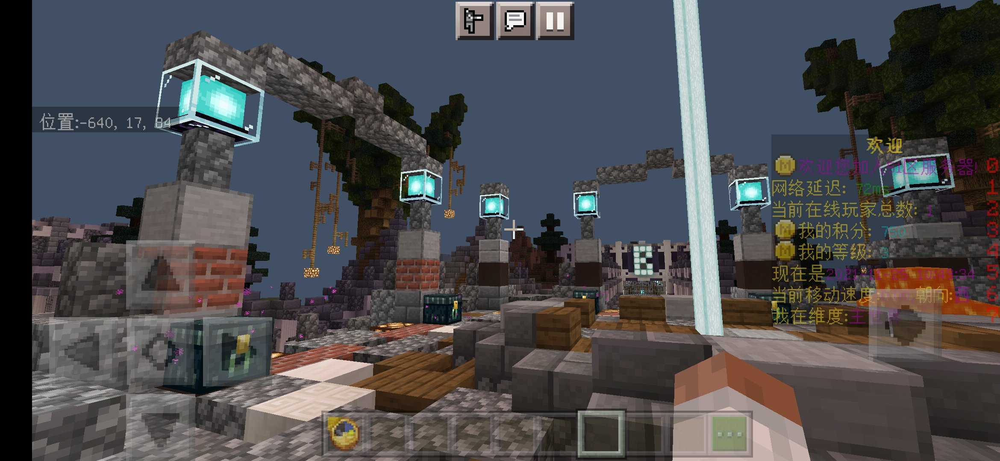
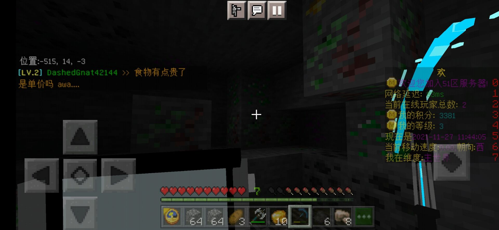
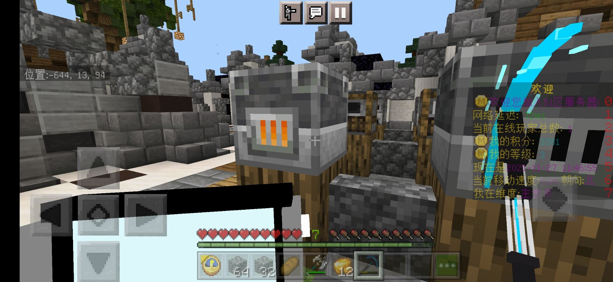
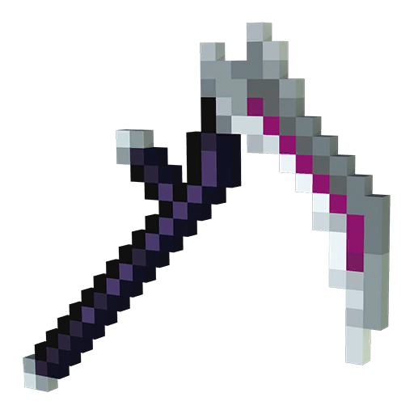
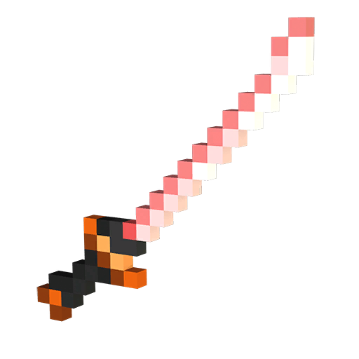
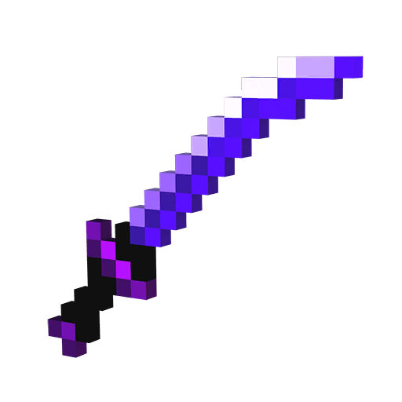
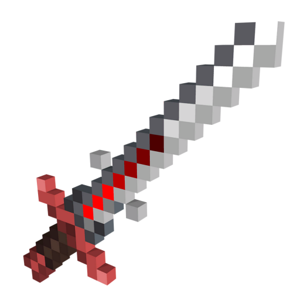
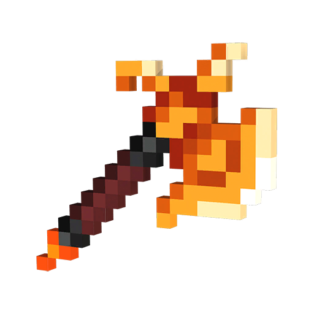
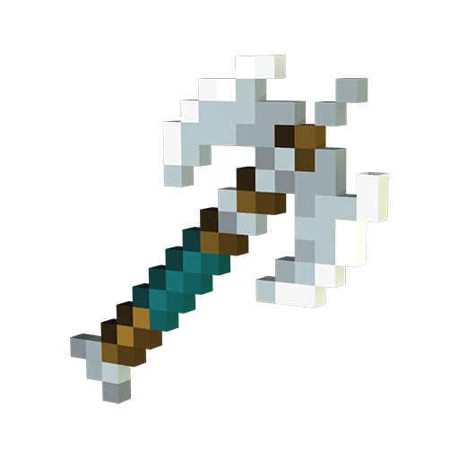
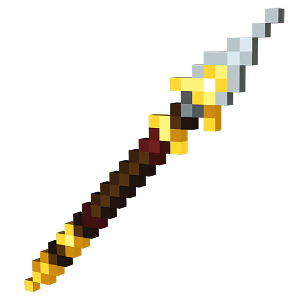

引言
欢迎来到51区
这是一个危险的地方
你要努力升级自己的装备，并在监狱中占有一席之地
准备好了吗，新人，跟我一起来吧
初来乍到
进入服务器后你会站在监狱出生点

同时系统会送给您一个钟来作为礼物
钟点击地面即可唤起菜单
现在你身无分文，不过我们有新手礼包
菜单中点击兑换码，我们准备了两份新手礼包
114514 - 输入即可获得500积分，作为您的初始资金
51area - 输入即可获得幸运长毛一支，作为监狱防身用
现在买一支镐子，我们去劳作换取积分
唤起菜单-商店-出售商店-工具
挑一支顺手的镐子，购买
唤起菜单-前往资源区-资源A区
你现在是1级囚犯，只能在A区劳作，积分够多后，即可升级进入高级资源区
资源区
不同的资源区对应的囚犯等级不同
| 资源区等级 | 囚犯等级 | 矿产 | 重置间隔 |
|---|---|---|---|
| A区 | 1级 | 原石 | 5分钟 |
| B区 | 3级 | 原石，铁矿，金矿，煤矿，金铁混矿，青金石绿宝石混矿 | 10分钟 |
| C区 | 5级 | 独立附魔台，熔炉 | 0 |
| D区 | 7级 | 红石块，青金石块，钻石矿，铁块，绿宝石块，红石下界合金混矿 | 1小时 |
赚钱！
来到资源A区之后，你会发现资源坑全部都是石头
拿起手中的镐子开始劳作吧！
当你的原石足够多之后，可以进行出售来换取积分
唤起菜单-商店-回收商店-方块-原石
回收后的积分可以用来升级囚犯等级
升级具体方法：唤起菜单-升级
开辟土地！
以下内容请在囚犯等级达到LV.3后阅读现在你的积分基本维持在1k水平左右，是时候开辟一块土地进行种植了
总吃监狱食堂的食物，积分消耗是个问题
唤起菜单-传送到建筑服
接下来服务器会自动把您转移到建筑服
小贴士：两个服务器的积分和末影箱是同步的，这意味着您可以通过末影箱来跨服运输
建筑服务器内是超平坦地形，而且是默认生存模式，这意味着您可以随处建房子
不过距离出生点太近了还是不好，我们来离远一点
执行/tpr指令 ，服务器会随机选一处地点为我们安家
落地后请马上使用菜单-HOME-添加家园
这样就不怕回不来了
种植时间
找到一块空地之后，您可以开始种植了
商店里有您所需的种子和树苗，使用积分购买即可
种植后收获的作物可以在商店中进行出售，除了监狱劳作，这也是给很好的积分来源
进入资源B区
资源B区的矿物相对A区很丰富，矿物种类很多

但是矿物回收并无粗矿石，这怎么办？
您现在有两种方法来获得矿物锭
- 在监狱中心的公共烧制中心冶炼
- 在资源C区的单间冶炼
- 在建筑服您的领地内冶炼
公共烧制中心位于监狱中心，提供普通熔炉，高炉和烟熏炉
在这里不但可以冶炼金属，还可以制作食物
在这里烧制最为经济实惠，但是要提防他人来顺走您的矿物
资源C区的单间里面可以让您放心的烧制矿物，如果不回到建筑服在这应该是最安全的
现在监狱没有人，我暂时在烧制中心冶炼

获取肉制品！
可能你已经发现了，在建筑服杀死生物不能获取凋落物
没错，在这里你不能像以往那样轻松的获取肉制品了
请记住一点：不要吃生肉
打造武器！
在监狱里没有一把合手的防身武器怎么行呢
我们为此新增了多种武器供您选择
狱卒的镰刀
这把镰刀属于恐怖的狱卒海布洛克·科普。

🗡️+7 / 绑定魔法伤害
狱卒的锁链被附魔，无法轻易挣脱。
大师的武士刀
大师的武士刀已经存在了很久，在正确的时刻出现在英雄面前。

🗡️+8 / 0.5秒攻击冷却和暴击几率
该武器在一次攻击中可以造成很大的伤害。
黑暗武士刀
一把在战斗胜利之前不会休息的刀。

🗡️+8 / 0.5秒攻击冷却和凋零伤害
它的刀刃诅咒着你面前的一切，直到死亡。
食心者
在征服乌贼海岸时，这枚符文之刃被赋予了阿奇莱格最杰出的将军之一，并注入了黑暗的巫术。

🗡️+8 / 吸血
剑上的神秘符文能够从生物那里窃取生命值。
烙火
在炽热锻造厂最黑暗的深处制作，并拥有火热的力量。

🗡️+7/ 发射火球 & 火方面 & 耐火性
下界的火焰将无情地将所有生物化为灰烬。
旋风
旋风，在史诗般的暴风雨中锻造，是一把轻轻悬浮的双刃斧头。

🗡️+7 / 施放冲击波和缓慢下降
狂风暴不会停止，直到一切都被摧毁。
幸运长矛
一根由幸运的灵魂守护的长矛，给任何挥舞它的人带来好运。

🗡️+6 / 远程攻击 & 治疗 & 力量
在神的保佑下，持有者将拥有无穷无尽的活力。